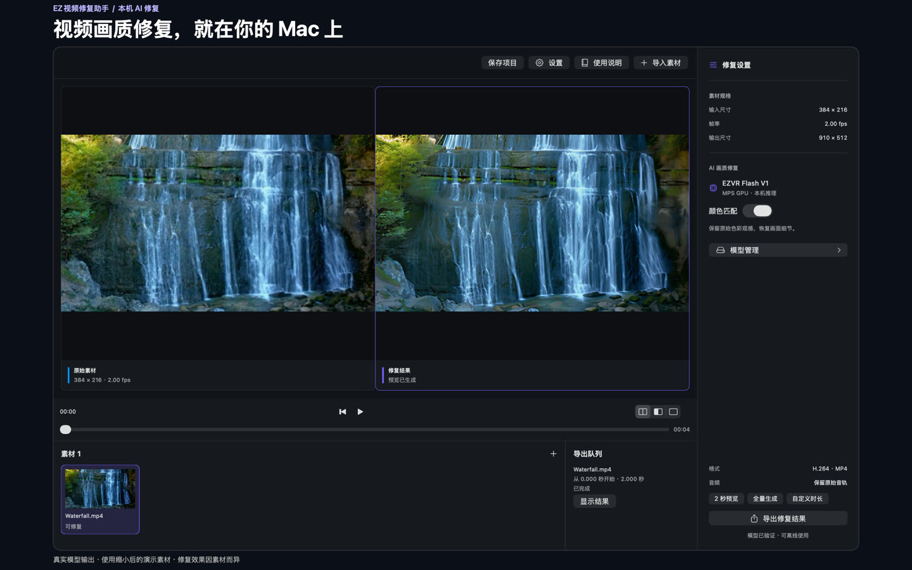
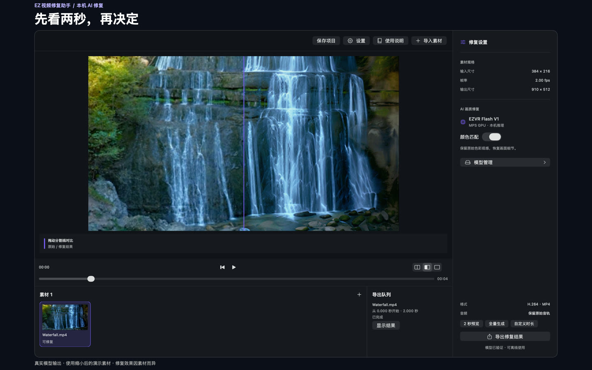
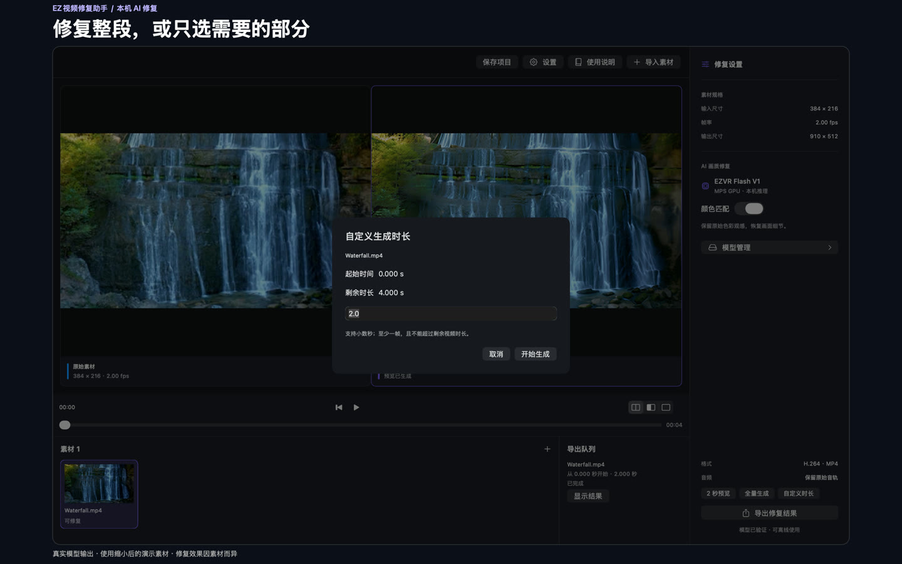
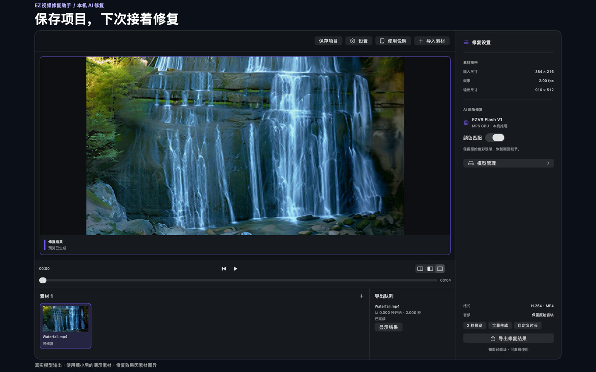
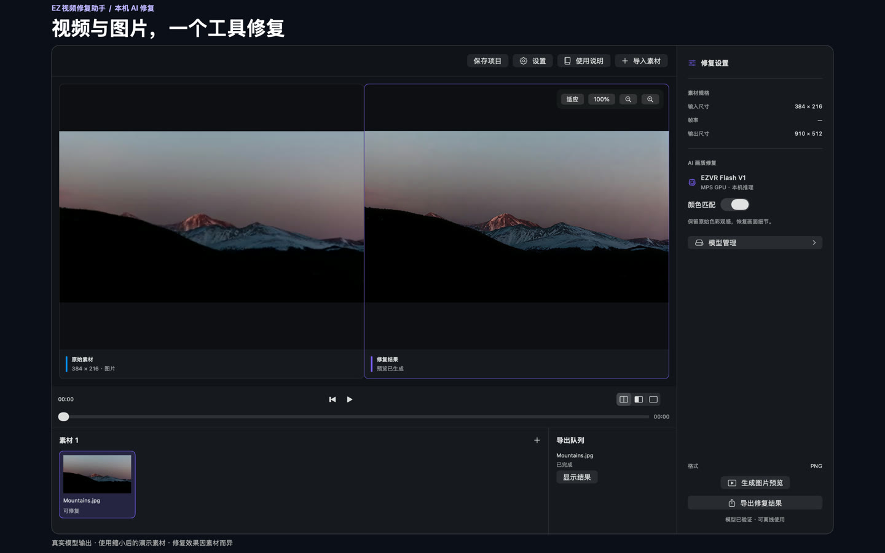

真实模型输出
先看看，一小段的变化。
原始素材修复结果
实际修复的 2 秒片段，演示输入为 384 × 216、2 fps；片段长度不代表处理耗时。首次需下载或提供模型，准备完成后可离线修复。
看看真实使用界面
点击截图查看完整尺寸。画面使用真实模型输出及缩小后的演示素材，效果因素材而异。





素材来源
Video: Adrien JACTA / Pexels · Pexels License
Photo: Nathan Anderson / Unsplash · Unsplash License